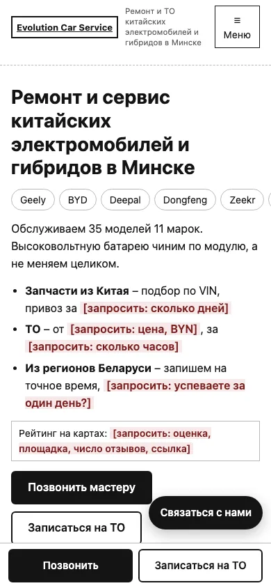
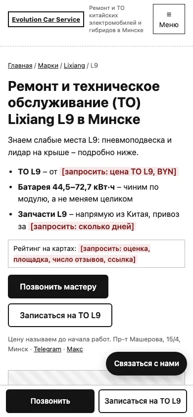
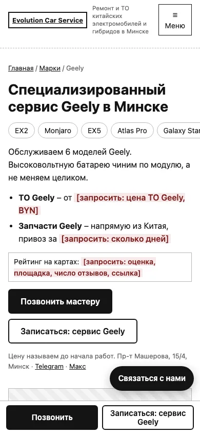
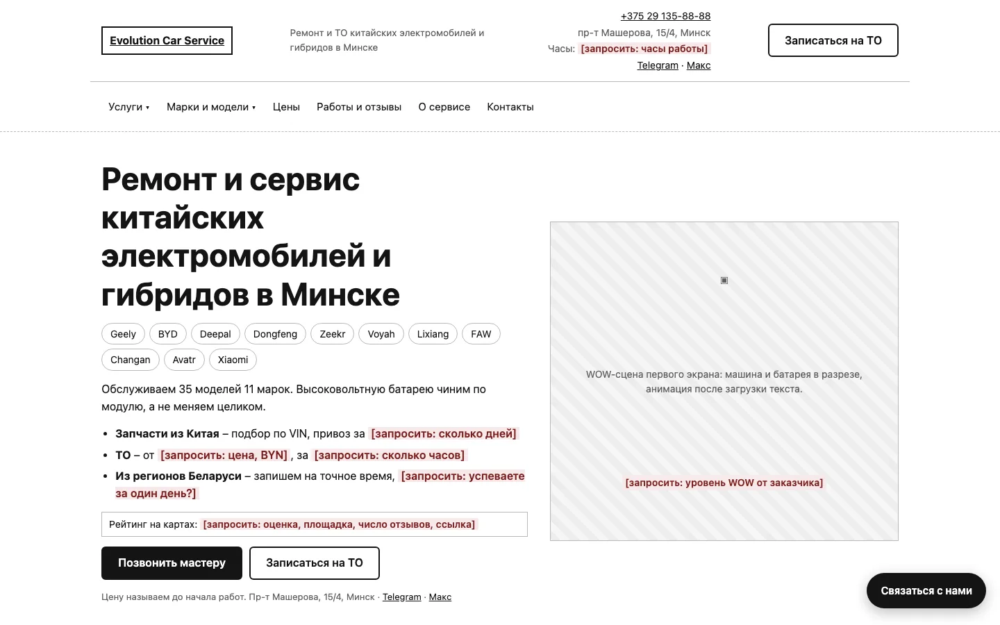

Первые экраны Evolution Минск переделаны по новому правилу на всех 135 страницах, правило – в скиллах и в проверке кодом
Прототип: главная · хаб Geely · лендинг Lixiang L9 · услуга «Батарея»
Прошлый разбор: почему было водой и 10 правил
1. На сайте: вода ушла, на её месте – факты из данных и с живого сайта
Новых обещаний я не придумывал. Два настоящих отличия уже были на живом сайте сервиса: «батарею чиним по модулю, а не меняем целиком» и «запчасти везём напрямую из Китая». Цифры взяты из наших данных: 35 моделей, 11 марок, ёмкость батарей и слабые места из паспортов моделей. Чего нет – стоит метка «запросить».
| Тип страницы | Было | Стало |
|---|---|---|
| Главная | перечень услуг, «цену называем до начала работ», «дилерское оборудование», «гарантия, [срок]» | 11 марок чипами по спросу, «Обслуживаем 35 моделей 11 марок. Высоковольтную батарею чиним по модулю, а не меняем целиком», буллеты: запчасти из Китая, ТО от, из регионов Беларуси |
| Хаб марки (11) | перечень услуг + те же три общие строки | модели марки чипами, «Обслуживаем 4 модели Lixiang», ТО от, запчасти марки |
| Лендинг модели (35) | техописание, «дилерское оборудование», «гарантия», «цена до начала работ» – 4 буллета | «Знаем слабые места L9: пневмоподвеска и лидар на крыше» (из паспорта), ТО от, батарея 44,5–72,7 кВт·ч, запчасти |
| Услуга (16) и услуга + марка или модель (62) | первая фраза описания + «цену называем до начала работ» | одна фраза на страх по каждой услуге + паспорт таблицей: цена, время, гарантия |
| Все страницы | главная кнопка – запись, телефон вторым | «Позвонить мастеру» главной, запись второй; в липкой панели так же |
Почему звонок главный: Метрика за год – 3 009 целевых звонков против 965 отправок формы.
«Цену называем до начала работ» осталась в одном месте – подсказкой под кнопкой, рядом с адресом, Telegram и Максом.




2. Правило внесено и ловится кодом – повторить ошибку не дадим
- Правило целиком –
~/.claude/skills/marketolog/references/pervyy-ekran.md: зачем экран, порядок выбора текста, 10 правил, таблица по типам страниц, пример Evolution. - Кому разнесено:
- маркетолог – раздел в скилле;
- прототипировщик
site-prototype– строка в шаге сборки; - проверка лендинга
site-landing– в пункте «Первый экран»; - Хормози – в строке «Текст на сайт»;
- решения владельца
site-lead/memory/rules.md– строка 16.11. - Карточка-шаблон
par-pervyy-ekran, по которой экран заполнялся «по форме», теперь сначала отсылает к правилу. - Проверка
proverka.mjs: - FAIL на гигиену в подзаголовке и буллетах;
- FAIL на подзаголовок-перечень;
- FAIL на 4 и больше буллетов;
- с флагом
--boy– FAIL на «запросить» в первом экране; - ИНФО – на дубль с заголовком ниже и на H1 длиннее 12 слов;
- исключение – только по твоему слову, атрибутом
data-hero-ok.
3. Что проверено
- Проверка поймала старую главную: 4 FAIL первого экрана – ровно те строки, что ты назвал лишними. Рейтинг не тронут: это доказательство.
- Новая сборка: правила первого экрана проходят на 135 из 135 страниц с H1.
- Полная проверка с Playwright на 9 страницах всех типов (390 и 1440): по первому экрану ни одного FAIL. Кнопка в первом окне на телефоне. Сначала 11 марок в два ряда сдвинули её на 20 px вниз – сделал ряд лентой вбок.
- Снимки первых экранов просмотрены глазами (выше).
- Живой адрес: главная, Geely, L9, «Батарея» отдают 200 и новый текст.
/design/соседнего чата на месте, его не трогал. - Коммиты: генератор
847e0b9, выкладка67fe113, состояниеbd54ebb. Чужие незакоммиченные правки вsborka.mjsв мой коммит не попали. - База знаний маркетолога: 265 карточек, 0 ошибок.
4. Что не трогал и почему
- Дизайн главной с Фигмы (соседний чат, твоё решение 16.11 «первый экран – с Фигмы») расходится с правилом:
- H1 «Сервис и ремонт автомобилей из Китая в Минске» не совпадает с SEO-заданием;
- подзаголовок – перечень «От диагностики до настройки мультимедиа» с длинным тире;
- надзаголовок без ключа;
- главная кнопка – запись, а не звонок.
Записал в состояние проекта, решать тебе.
- Старые FAIL прототипа, не про первый экран:
- надзаголовок «Видеоотзывы клиентов» без ключа;
- длинные блоки без режима для телефона (главная – 3, L9 – 2);
- подпись в шапке мельче 13 px;
- плавающая «Связаться с нами» на телефоне наезжает на вторую кнопку первого экрана.
- Эталоны 08.11 в docs/prototip (glavnaya, l9, monjaro) не пересобирал: их заменила полная сборка, и они не опубликованы.
- H1 страницы «Марки» «С какими машинами мы работаем» – не запрос. Это решение SEO-задания, отдельной правкой.
Затрачено на этот шаг – около 1,5 ч.
Нужно от тебя
- Дизайн главной: Фигма или правило? Если правило – чат дизайна меняет первый экран, около 0,5 ч.
- Шесть ответов клиента – без них буллеты остаются с метками: - срок привоза запчастей; - ремонт батареи по модулю (подтвердить); - цена ТО «от» и сколько часов; - срок гарантии; - рейтинг на картах; - успевают ли за день для приезжих из регионов.
- Старые FAIL прототипа: чинить? Около 1 ч.
Что раскрыть
- Подзаголовки всех 16 услуг: какая фраза откуда взята.
- Порядок марок по спросу и почему Geely первой.
- Как работает проверка первого экрана и где она может ошибиться.